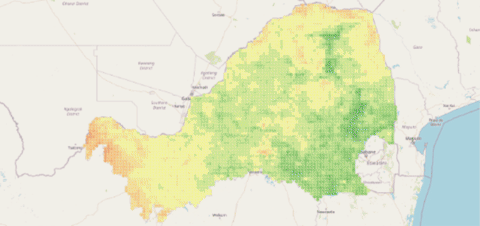

Historic data | Seasonal patterns | Correlation trends
Vegetation condition was incorporated into the analysis through the use of the **Normalized Difference Vegetation Index (NDVI)**, a remote sensing indicator commonly used to measure vegetation health, density, and photosynthetic activity. NDVI provides an indirect measure of vegetation productivity by analysing the difference between red and near-infrared light reflected by vegetation. Healthy green vegetation strongly reflects near-infrared wavelengths while absorbing red wavelengths, resulting in higher NDVI values. Lower NDVI values generally indicate sparse vegetation, degraded vegetation conditions, or areas with limited plant growth.
NDVI data were obtained through **Google Earth Engine (GEE)**, a cloud-based geospatial analysis platform that provides access to extensive satellite imagery collections and computational resources. The use of Google Earth Engine allowed vegetation information to be extracted efficiently over large geographic regions and multiple years without requiring the manual download and processing of large satellite image datasets.
For this study, satellite-derived vegetation data were retrieved from the **Moderate Resolution Imaging Spectroradiometer (MODIS)** satellite product available within the Google Earth Engine catalogue. MODIS was selected due to its consistent global coverage, long historical record, and suitability for monitoring vegetation dynamics at regional scales. The dataset provides regular observations of vegetation conditions, allowing seasonal and annual changes in vegetation productivity to be analysed.
The NDVI extraction process was automated within Google Earth Engine using a custom script. The process consisted of defining the study regions, filtering the satellite image collection according to the required time period, calculating vegetation indices, and extracting spatially representative NDVI measurements.
The extraction methodology consisted of the following steps:
The resulting dataset contained information such as province, spatial group identifier, year, week, date, and NDVI values. These data were subsequently processed in Python, where they were aligned with the weekly cattle price dataset and rainfall variables.
NDVI provides valuable information for livestock production systems because vegetation availability directly influences grazing conditions, pasture quality, and carrying capacity. During periods of favourable rainfall, vegetation productivity typically increases, resulting in improved grazing availability and potentially influencing livestock production decisions. Conversely, reduced vegetation productivity may indicate drought stress, reduced forage availability, and increased production pressure.
The historical vegetation trends are presented below to illustrate seasonal changes in vegetation conditions across the study regions.
